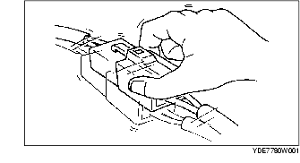

BUSQUEDA AVERIAS, PROBLEMAS INTERMITENTES
B3E090358000W02
Método vibraciones
• Si un funcionamiento incorrecto ocurre o empeora mientras se conduce el vehículo en una calle irregular o cuando el motor está vibrando, llevar a cabo los pasos siguientes.
-
Nota
-
• Hay muchas razones por las que las vibraciones del vehículo o del motor puedan causar un funcionamiento incorrecto del sistema eléctrico. Unas de las cosas que se deben controlar son:
-
- Conectores no completamente instalados.
-
- Cableado sin juego completo.
-
- Cables posicionados sobre estribos o partes que se mueven.
-
- Cables que recorren demasiado cerca de partes calientes.
-
• Un cableado inapropiadamente dirigido, inapropiadamente fijado o aflojado puede hacer que los cables se encajen entre las partes.
-
• Los lugares que deben ser mayormente controlados son las uniones de los conectores, los puntos de vibraciones, y lugares en que el cableado pasa a través de pared cortafuego, paneles de la carrocería, etc.
-
• Comprobar los DTC o los funcionamientos incorrectos sacudiendo los cableados y los conectores que podrían causar el funcionamiento incorrecto.

Método de control terminales de los conectores
1. Comprobar el estado de conexión en cada terminal hembra.
2. Introducir un terminal macho en el terminal hembra para comprobar si hay aflojamiento.